Unused & inaccessible
Part icons made in Blender if they actually have models (in the February 19 2008 build, as retail doesn't have any of the flora part models). Parts categorized arbitrarily
Limbs/trunks
Branches_MetaBallBone
"Branch Bone"
modelCapabilityLimb 1
Parent: CreatureRigBlockTemplate
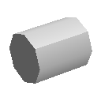
Branches_Standard
"standard"
Max muscle: Muscle_muscle_plant
Min muscle: Muscle_muscle_plant
Uses skin
Parent: PlantBranchTemplate
FE_assembly_limb_01
"Ambidextrous Limbus"
Assembly file: assemblyArm1.crt
Parent: -
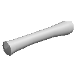
FE_branch_01a
"FE_branch_01a"
modelCapabilityLimb 1
modelHasSocketConnector true
Parent: PlantBranchTemplate
(Side note: FE_assembly_limb_01 for some reason also has "key editorCameraThumbnail 0xDC0598FA", but otherwise also has very little data as every other flora assembly part does, and its .crt file doesn't exist)
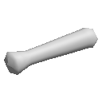
FE_branch_02a
"FE_branch_02a"
modelCapabilityLimb 1
modelHasSocketConnector true
Parent: PlantBranchTemplate
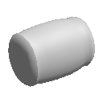
FE_branch_04a
"FE_branch_04a"
modelCapabilityLimb 1
modelHasSocketConnector true
Parent: PlantBranchTemplate
FE_branch_05a
"FE_branch_05a"
modelCapabilityLimb 1
modelHasSocketConnector true
Parent: PlantBranchTemplate
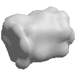
FE_branch_06a
"FE_branch_06a"
modelCapabilityLimb 1
modelHasSocketConnector true
Parent: PlantBranchTemplate
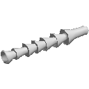
FE_branch_07a
"FE_branch_07a"
modelCapabilityLimb 1
modelHasSocketConnector true
Parent: PlantBranchTemplate
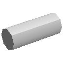
FE_Branch_Standard
"fe_branch_standard"
Max muscle: Muscle_muscle_plant
Min muscle: Muscle_muscle_plant
Uses skin
Parent: PlantBranchTemplate
FE_muscle_trunk_01
"fe_branch_standard"
Max muscle: Muscle_FE_muscle_trunk_01a
Min muscle: Muscle_FE_muscle_trunk_01b
Uses skin
Parent: PlantBranchSkinnedTemplate
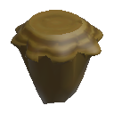
FE_root_01a
"fe_root_01a"
modelHasSocketConnector true
modelIsPlantRoot true
Can be parentless
Parent: PlantRootTemplate
FE_root_02a
"fe_root_02a"
modelHasSocketConnector true
modelIsPlantRoot true
Can be parentless
Parent: PlantRootTemplate
FE_root_03a
"fe_root_03a"
modelHasSocketConnector true
modelIsPlantRoot true
Can be parentless
Parent: PlantRootTemplate
FE_root_01a to 04a had textures baked into the model itself, but FE_root_03a also references an existent texture fe_root_03
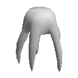
FE_roots_01
"fe_roots_01"
modelCapabilitySpine 1
modelHasSocketConnector true
modelIsPlantRoot true
Can be parentless
Parent: PlantRootTemplate
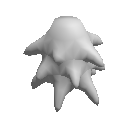
FE_roots_02
"fe_roots_02"
modelCapabilitySpine 1
modelHasSocketConnector true
modelIsPlantRoot true
Can be parentless
Parent: PlantRootTemplate
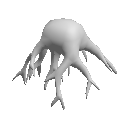
FE_roots_03
"fe_roots_03"
modelCapabilitySpine 1
modelHasSocketConnector true
modelIsPlantRoot true
Can be parentless
Parent: PlantRootTemplate
There's also a model for this part with no flora_rigblock~ file. It's VERY small
Leaves
Flatleaf part textures here just use the tintMask texture, red is base, green is coat and blue is detail
Deciduous leaves use the texture that's already on the part itself, the actual diffuse in skinPaint_texture~ has orange-red leaves
FE_leaves_stalk_01a uses the diffuse texture (laid over a beige color), as the UVs lined up
FE_leaves_palm models have textures, but they don't align with the models. FE_leaves_palm_07a is also missing a model
FE_leaf_19 and FE_leaf_33 lack textures
FE_flatLeaf_02
"FE_flat leaf_02"
Parent: PlantLeafTemplate
FE_flatLeaf_05
"FE_flat leaf_05"
Parent: PlantLeafTemplate
FE_leaf_19
"FE_leaf_19"
Parent: PlantLeafTemplate
FE_leaf_33
"FE_leaf_33"
Parent: PlantLeafTemplate
FE_leaves_deciduous_01a
"FE_leaves_deciduous_01a"
Parent: PlantLeafTemplate
FE_leaves_deciduous_02a
"FE_leaves_deciduous_02a"
Parent: PlantLeafTemplate
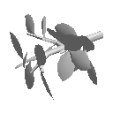
FE_leaves_palm_01a
"FE_leaves_palm_01a"
Parent: PlantLeafTemplate
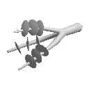
FE_leaves_palm_02a
"FE_leaves_palm_02a"
Parent: PlantLeafTemplate
FE_leaves_palm_03a
"FE_leaves_palm_03a"
Parent: PlantLeafTemplate
FE_leaves_palm_04a
"FE_leaves_palm_04a"
Parent: PlantLeafTemplate
FE_leaves_palm_05a
"FE_leaves_palm_05a"
Parent: PlantLeafTemplate
FE_leaves_palm_06a
"FE_leaves_palm_06a"
Parent: PlantLeafTemplate
FE_leaves_palm_07a
"FE_leaves_palm_06a"
Parent: PlantLeafTemplate
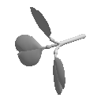
FE_leaves_palm_08a
"FE_leaves_palm_08a"
Parent: PlantLeafTemplate
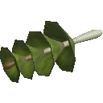
FE_leaves_stalk_01a
"FE_leaves_stalk_01a"
Parent: PlantLeafTemplate
These are supposed to (mostly) match the palm parts with corresponding numbers, and are referenced by these models, but the UVs don't match up. For whatever reason three parts reference FE_leaves_palm_05 and no parts reference FE_leaves_palm_06
Textures left to right are the diffuse, specBump and tintMask textures; top to bottom are the RGB channels and the alpha channel.
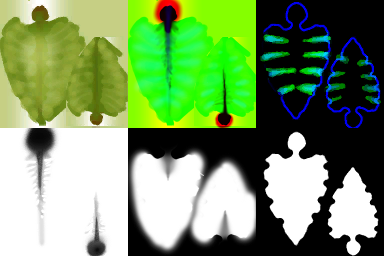
FE_leaves_palm_01 (used by FE_leaves_palm_01a) |
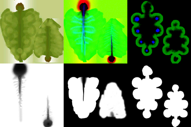
FE_leaves_palm_02 (used by FE_leaves_palm_02a) |
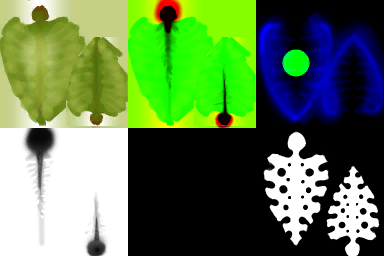
FE_leaves_palm_03 (used by FE_leaves_palm_03a) |
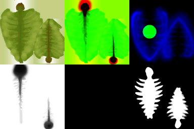
FE_leaves_palm_04 (used by FE_leaves_palm_04a) |
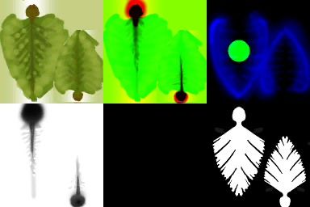
FE_leaves_palm_05 (used by FE_leaves_palm_05a,
FE_leaves_palm_06a and FE_leaves_palm_07a) |
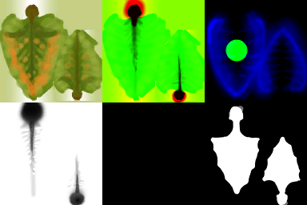
FE_leaves_palm_06 (actually not used!!) |
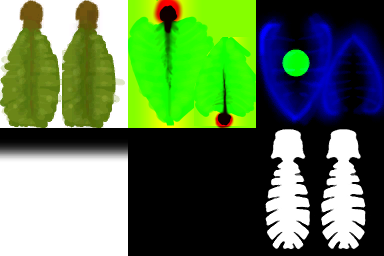
FE_leaves_palm_08 (used by FE_leaves_palm_08a) |
Fruit
Only the third one defines skinpaint textures, strangely, even though 02 also has textures in skinPaint_texture~. I put the texture on both 02 and 03 anyway, it's just the diffuse texture laid over the default beige color. I don't think these are correct for these parts though as the UVs dont match up
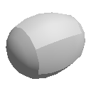
FE_fruit_01
"fruit 01"
Parent: PlantFruitTemplate
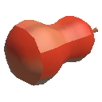
FE_fruit_02
"fruit 02"
Parent: PlantFruitTemplate
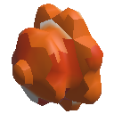
FE_fruit_03
"fruit 03"
Parent: PlantFruitTemplate
There's also the following models with no flora_rigblock~ files. Textures also baked into the model. The latter seems to match FE_fruit_stem_01
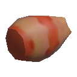
fe_fruit_01a |
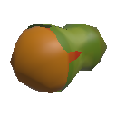
fe_fruit_02a |
fe_fruit_03a |
Other stuff
PE_eye_01
"fruit 01"
Parent: PlantRigBlockTemplate
PE_Vertebra
"Vertebra"
modelCapabilitySpine 1
modelIsVertebra true
Can be parentless
Is not allowed out of bounds
Uses skin
Parent: PlantRigBlockTemplate
Side note, technically these from skinPaint_texture~ should be unique parts, but they're used by the corresponding parts with "a" on their names, so I'm not counting them as unique parts:
- fe_cap_01 (used by FE_cap_01a)
- fe_cap_02 (used by FE_cap_02a)
- fe_cap_03 (used by FE_cap_03a)
- fe_cap_04 (used by FE_cap_04a)
- fe_cap_05 (used by FE_cap_05a)
- fe_cap_06 (used by FE_cap_06a)
- FE_leaves_deciduous_01 (used by FE_leaves_deciduous_01a)
- FE_leaves_deciduous_02 (used by FE_leaves_deciduous_02a)
- FE_leaves_stalk_01 (used by FE_leaves_stalk_01a)
- fe_root_03 (used by FE_root_03a)